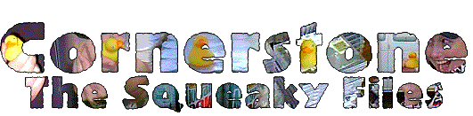
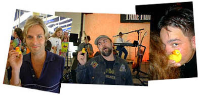
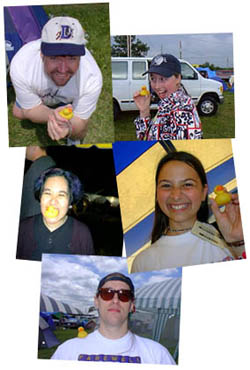
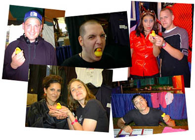

|
 |
 |

| Cornerstone: Welcome!
It's more than a music party -- Tucked behind the underground tent is Cornerstone's ArtRageous and Imaginarium exhibits. Authors, painters, and others of a creative bent can enjoy conferences, discussion, and great coffee. The midnight film festival was cool, too...
So much music, so little time... Sob! Here's a peek at some of the cool stuff I stumbled across over the course of the festival. Some oldies and some fresh stuff -- no matter what the genre, it's hot stuff.
The Squeaky Files Follow the adventures of Squeaky the Duck on his adventures at the fest. From his near-death experience at the hands of Kevin131 to a DC Talk sighting, he's been almost everywhere.
Well, T-shirts, too. Cornerstone is a great place to find a variety of wacky hairstyles, and most of the owners are good natured sorts who're quite willing to offer their coifs for a good cause -- this page, for one!
What do you get when you put a bunch of music-obsessed usenet junkies in one place? Vibrating hairrushes. That's what. The fourth annual RMC Cornerstone picnic is here, captured in bits and bytes for all of posterity...
Whether it's beating the heat, finding munchies, or selecting that perfect camping site, there's someone who's been through it and has some words of wisdom to offer. Recorded here for posterity are essential Cornerstone survival skills.
|
Perhaps a little explaination is required... Beck, several months before Cornerstone, gifted me with Squeaky, a personable little rubber duck who's been my traveling companion ever since. Great conversation started, that quacker!
As Bev later said, in her patented melodramatic fashion, Squeaky became a unifying metaphor for the diversity and beauty of Cornerstone Festival. He was photographed with dozens of artists and festers, nearly eaten by one or two guitarists, and once spotted trying to hitch a ride with a pallet of Mountain Dew. So without further ado... The Squeaky Files. A duck's eye view of Cornestone.  The blond dude in the upper left photo is Keven of DC Talk. He was wandering around the exhibition tent, checking out various booths and artists. I spotted him, did a double-take, and promptly handed him Squeaky. Voila! In the middle is Glen Kaiser, one of the patriarchs of the heavy/underground Christian music scene. A veteran of the Jesus Music days of the 60's and 70's, he helped form Rez Band and is now doing some independent blues projects. He's also one of the leaders of JPUSA, and an all around cool guy who knows how to strike a pose with a duck. To the right is Joey Belville of the Echoing Green. After the concert, he snagged the Squeakmeister and hid behind a nearby fan's coif, with Squeaky poking out. Squeak-a-boo! Or, perhaps, Hide and Go Squeak... While bopping around the fest I came in contact with loads of old friends and a number of net.friends who were kind enough to vogue with Squeaky. Up in the top left corner is Ed Rock, the faithful U2 fan and Fleming & John evangelist of rec.music.christian. Very cool guy, and the one who recommended the new Plumb CD to me first. Next to him is Jenfur, aka Cappucino Girl, a fellow concert-goer I met after last year's fest. In the middle on the left is Cathy Neing, aka cyanide, another one of the r.m.c crowd that I run across at concerts. A month later, a discussion would start up on the group about Squeaky's escapades. Cathy's response: "How many people held that duck before I put it in my mouth?" Next to her is Jess Gockley, aka Jessrae. Many moons ago we met on AOL, and she's cool even though she doesn't like the videos for Steve Taylor's Squint CD. Last but not least is Jeff Elbel, the musical mastermind behind Farewell to Juliet and Sunny Day Roses, two tres hip independent CDs. On the left and right, respectively, are Brian Scroggins of Prophecy of PANIC, and Sherri and Walli Shaw, of Deitiphobia fame. Sherri routinely hams it up, and Squeaky provided a convenient prop. Most notable was Kevin131, guitarist and songwriter for Aleixa. "Hmmm... I've got to think of something interesting to do with this duck," he said as soon as he saw it. You guessed it -- he's the guy in the middle. Down in the bottom row are April and Laurel of Aleixa, and Ronnie Martin of Joy Electric. This year he shed the Goth thang for a more contemplative look.  |
|
|
|